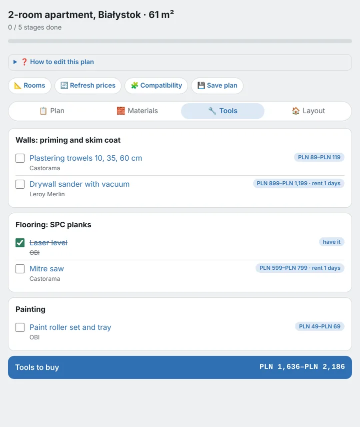

Renovierung mit Claude planen
Remont ist ein kostenloser MCP-Connector, der einen Chat mit Claude in einen vollständigen Renovierungsplan verwandelt: Arbeitsreihenfolge, Materialbedarf aus Ihren Raummaßen, Preise aus Baumärkten Ihres Landes, Handwerkerpreise, Checkliste, Grundriss und 3D-Ansicht.
Mit Claude verbindenhttps://remont-mcp.wrpzdm9jmt.workers.dev/mcp
So sieht es aus





Was es kann
Material aus Raummaßen
Farbe, Spachtel, Grundierung, Fliesen, Kleber, Fugenmörtel, Boden, Trittschall, Gipskarton — mit Gebinden und Verschnitt.
Arbeitsreihenfolge
Etappen in der richtigen Reihenfolge mit Trocknungszeiten; Aufgaben als Checkliste.
Baumarktpreise
OBI, Hornbach, Bauhaus und andere — mit Produktlinks; Varianten Standard, Premium und Luxus.
Selbst oder Handwerker
Jede Etappe zwischen „selbst“ und „Handwerker“ umschalten — die Kosten rechnen sich neu.
Werkzeug
Was kaufen und was günstiger mieten — für die Etappen, die Sie selbst machen.
Grundriss und 3D
Räume, Türen und Fenster, Möbel und Küchenmodule verschieben, 3D-Ansicht.
Gespeicherte Pläne
Ein persönlicher Code öffnet Ihre Pläne in jedem Chat oder per Link; Einkäufe und Häkchen bleiben.
22 Länder
Deutschland, EU, UK, USA, Kanada, Ukraine und mehr. Pläne in 5 Sprachen.
So funktioniert es
- Connector einmal in Claude hinzufügen.
- Claude die Wohnung beschreiben oder ein Foto des Grundrisses senden — oder den kurzen Fragebogen ausfüllen.
- Einen interaktiven Plan erhalten: Material ändern, „selbst / Handwerker“ umschalten, Aufgaben abhaken, speichern.
Verbinden
Claude (Web, Desktop, Mobil)
- claude.ai öffnen und anmelden.
- Einstellungen → Connectors öffnen (in neueren Versionen: Customize → Connectors).
- „Eigenen Connector hinzufügen“ (Add custom connector) oder „+“ klicken.
- Name: Remont. URL: die Server-URL oben. Kein OAuth, keine Schlüssel — Hinzufügen klicken.
- Im Chat das „+“- / Werkzeugmenü öffnen und prüfen, dass Remont aktiv ist. Dann einfach nach der Renovierung fragen.
Kostenloser Tarif: ein eigener Connector. Team / Enterprise: zuerst fügt ihn ein Owner in den Organisationseinstellungen hinzu. Danach funktioniert er auch in den Claude-Apps für Desktop und Handy.
ChatGPT
Im Entwicklermodus einen eigenen Connector (App) mit der Server-URL und ohne Authentifizierung hinzufügen.
Claude Code
claude mcp add --transport http remont https://remont-mcp.wrpzdm9jmt.workers.dev/mcp
Cursor, VS Code und andere MCP-Clients
{
"mcpServers": {
"remont": {
"url": "https://remont-mcp.wrpzdm9jmt.workers.dev/mcp"
}
}
}Fragen Sie zum Beispiel
Fragen
Ist es kostenlos?
Ja. Der Connector ist kostenlos und braucht keine Anmeldung. Sie brauchen ein Konto bei Claude (oder einem anderen MCP-Client); ob eigene Connectors möglich sind, hängt vom Tarif ab.
Woher kommen die Preise?
Claude sucht sie in den Baumärkten Ihres Landes und verlinkt jedes Produkt. Ist noch kein Preis gefunden, zeigt der Plan einen Richtpreis mit ≈.
Was ist mit meinen Daten?
Kein Konto und keine personenbezogenen Daten. Pläne liegen unter einem zufälligen Code; Plan-Links sind nicht zu erraten und werden nicht indexiert.
Welche Länder?
22 Länder sind eingebaut, darunter Deutschland, Österreich, Polen, UK, USA und Kanada. Für andere Länder ergänzt Claude Währung und Geschäfte selbst.